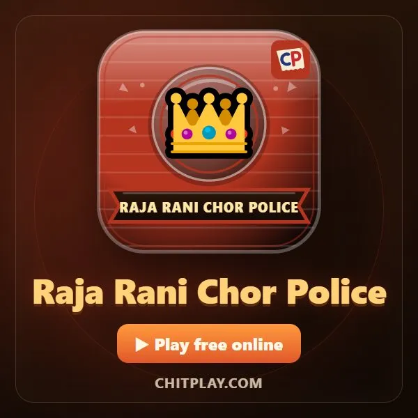

কোনো জিনিস ছাড়াই খেলার খেলা

লাইনে দাঁড়িয়ে, লম্বা সফরে বা বাড়িতে খেলার কিছু নেই? তোমার একটা জিনিসও লাগবে না। তোমার গলা, হাত আর একটু কল্পনাই ঘণ্টার পর ঘণ্টা খেলার জন্য যথেষ্ট।
নিচে এমন খেলা আছে যাতে কোনো জিনিস লাগে না, আর হাতে শুধু ফোন থাকলে খেলার মতো কিছু বিনামূল্যের ChitPlay গেম।
ChitPlay-তে বিনামূল্যে খেলার গেম
প্রতিটি গেম ব্রাউজারে বিনামূল্যে চলে: কম্পিউটারের বিরুদ্ধে, অনলাইনে, বা বন্ধুদের সঙ্গে তাদের নিজের ফোনে।



যেকোনো জায়গায় খেলা যায় এমন পুরোনো খেলা
পাথর, কাগজ, কাঁচি
তিন গুনে হাতের ইশারা দেখাও: পাথর কাঁচি ভাঙে, কাঁচি কাগজ কাটে, কাগজ পাথর মোড়ে। পাঁচের মধ্যে তিন জেতা বিজয়ী।
কুড়ি প্রশ্ন
একজন কোনো মানুষ, প্রাণী বা জিনিসের কথা ভাবে। বাকিরা বড়জোর কুড়িটা হ্যাঁ-না প্রশ্ন করে বের করে সেটা কী।
আই স্পাই (আমার চোখে)
বলো "আমার চোখে এমন কিছু আছে যা … দিয়ে শুরু" আর একটা অক্ষর বলো। সবাই চারপাশে দেখে জিনিসটা আন্দাজ করে। যে ঠিক বলে সে পরের জিনিস বাছে।
শব্দের শিকল
একটা শব্দ বলো; পরের জন এমন শব্দ বলবে যা তার শেষ অক্ষর দিয়ে শুরু। একই শব্দ আবার নয়, সময় পাঁচ সেকেন্ড।
কোনটা বাছবে?
দুটো মজার বা কঠিন বিকল্পের একটা বেছে নিতে বলো, যেমন "শুধু গান গেয়ে কথা বলবে, নাকি শুধু ছন্দে?", আর সবাই নিজের উত্তর বোঝায়।
সাইমন বলছে
নেতা কাজ বলে। আদেশ "সাইমন বলছে" দিয়ে শুরু হলে তবেই করবে; তা ছাড়া নড়লে বাদ।
বুড়ো আঙুলের কুস্তি
প্রতিপক্ষের সঙ্গে আঙুল আটকে তার বুড়ো আঙুল তিন গোনা পর্যন্ত চেপে রাখার চেষ্টা করো।
গল্পের শিকল
একজন এক লাইন দিয়ে গল্প শুরু করে; প্রত্যেকে পরের লাইন যোগ করে। যত অদ্ভুত মোড়, তত মজার গল্প।
পরামর্শ
- শব্দ আর আন্দাজের খেলা গাড়ি বা ট্রেনের সফরের জন্য দারুণ।
- সবাই ভালো হতে থাকলে নিয়ম কড়া করো: কম সময়, কঠিন অক্ষর।
- কারও কাছে ফোন থাকলে ChitPlay-এর খেলায় ডাউনলোড বা সাইন-আপ লাগে না।
প্রশ্নোত্তর
কিছু ছাড়াই কোন খেলা খেলা যায়?
পাথর-কাগজ-কাঁচি, কুড়ি প্রশ্ন, আই স্পাই, শব্দের শিকল, কোনটা বাছবে, সাইমন বলছে আর বুড়ো আঙুলের কুস্তিতে কিছুই লাগে না।
দুজন কিছু ছাড়া কী খেলতে পারে?
কুড়ি প্রশ্ন, শব্দের শিকল, পাথর-কাগজ-কাঁচি আর বুড়ো আঙুলের কুস্তি দুজনের জন্য ভালো।